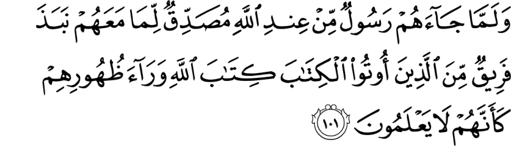

চৌধুরী সাহেব একদিন হাসপাতালে গুরুতর অসুস্থ অবস্থায় মনে মনে প্রতিজ্ঞা করলেন, “ইয়া আল্লাহ, এই রমজান থেকে আমি সবসময় পাঁচ ওয়াক্ত নামাজ পড়ব। আমাকে বাঁচিয়ে দিন আল্লাহ।” তিনি সুস্থ হয়ে বাসায় আসলেন। রমজান শেষে ঈদ আসল। তিনি সারাদিন বন্ধুদের বাসায় ঈদের দাওয়াত খেয়ে ঘুরে বেড়ালেন। পাঁচ ওয়াক্ত তো দূরের কথা, ঈদের জামাত ছাড়া আর এক ওয়াক্ত নামাজও তিনি পড়লেন না। তারপরে একদিন তিনি ঠিক করলেন: এখন থেকে অন্তত মাগরিব, ঈশা বাসায় এসে পড়বেন। কিন্তু দেখা যায়, তিনি প্রতিদিন সন্ধ্যায় অফিস থেকে বাসায় আসেন। তারপর খবর, সিরিয়াল, টক শো দেখতে বসেন। তার আর কোনো নামাজ পড়া হয় না।
যাইহোক, একসময় চৌধুরী সাহেব ঠিক করলেন, এলাকায় তার কিছু করা দরকার, কিছু পরিচিতি হওয়া দরকার। তিনি এলাকার মসজিদের বোর্ডকে বললেন, তাকে যদি সভাপতি বানানো হয়, তিনি মসজিদের সব মেরামত করবেন, মসজিদের পাশে একটা মাদ্রাসা করবেন। তাকে সসন্মানে মসজিদের সভাপতি বানানো হলো। জুন্মার নামাজে হাজারো মুসল্লির সামনে ঘটা করে তার নাম ঘোষণা দেওয়া হলো। কিন্তু মাসখানেক পর মসজিদের মেরামত শেষে মসজিদের মেম্বাররা যখন তাকে মাদ্রাসার ব্যাপারে জিজ্ঞেস করলেন, তিনি অবাক হয়ে বললেন, “মাদ্রাসা? আমি কবে বললাম মাদ্রাসা করার কথা? মসজিদের না সব মেরামত আমিই করে দিলাম? আপনারা দেখি আমাকে পেয়ে বসেছেন! আগামী পাঁচ বছর আর কিছু হবে না।”
এই ধরনের চৌধুরী সাহেবদের সাথে এই আয়াতের বনী ইসরাইলদের সাথে অনেক মিল পাওয়া যায়—
{kind=link}
এমনটাই কি সবসময় হয় না যে, যখনি তারা অঙ্গীকার করে, তাদের মধ্যে একদল তা ছুঁড়ে ফেলে? আসলে তাদের বেশিরভাগেরই কোনো ঈমান নেই। [আল-বাক্বারাহ ১০০]
এখানে বলা হয়েছে, এরা অঙ্গীকার ছুঁড়ে ফেলে। نبذ অর্থ কোনো কিছুর মূল্য না দিয়ে ছুঁড়ে ফেলে দেওয়া।[৫][১] অঙ্গীকার মানা তো দূরের কথা, কোনোদিন যে অঙ্গীকার করেছিল, সেটা স্বীকার পর্যন্ত করে না।
এখানে কী অঙ্গীকারের কথা বলা হয়েছে? মানুষের সাথে আল্লাহর تعالى এই অঙ্গীকারটি হলো: মানুষের যেসব অনন্য গুণ রয়েছে যেগুলো অন্য প্রাণীর নেই: চিন্তা শক্তি এবং বিচার বুদ্ধি —এগুলো সঠিক ব্যবহার করে নিশ্চিত হয়ে স্বীকার করা যে, মানুষ একটি নির্ভরশীল, দুর্বল প্রাণী এবং তাকে এক মহান শক্তির সামনে মাথা নত করতে হবে। সেই মহান প্রভুর ইচ্ছার কাছে নিজের ইচ্ছাকে সমর্পণ করতে হবে। —মানুষের এই সহজাত প্রবৃত্তির কথাই এখানে বলা হয়েছে। আল্লাহ تعالى এখানে অঙ্গীকারের বিস্তারিত বর্ণনা না দিয়ে, “আল্লাহ تعالى আমাদের প্রভু, আমরা আল্লাহর تعالى দাস”—এই সহজাত উপলব্ধি থেকে আল্লাহর تعالى প্রতি প্রভু হিসেবে আমাদের যে অঙ্গীকার হয়, তা নির্দেশ করেছেন।[২]
যখন একজন মুসলিম আল্লাহকে تعالى সৃষ্টিকর্তা হিসেবে মেনে নেয়, কিন্তু একমাত্র প্রভু হিসেবে মেনে নিতে পারে না, তখন সে কু’রআনের বাণী শুনে, সেটাকে নির্দ্বিধায় মেনে নিয়ে, নিজেকে পরিবর্তন করতে পারে না। তখন সে নানা ধরনের কু-যুক্তি দেখানো শুরু করে—
“আসলেই কি দিনে পাঁচ ওয়াক্ত নামায ফরয? কই, কোথাও তো লেখা দেখছি না।”
“হিজাব না করলে কি কোনো বড় ধরনের শাস্তির কথা বলা আছে কু’রআনে? কোথায়, দেখাও দেখি আমাকে?”
“কু’রআনে বলা আছে সুদ হারাম, কিন্তু ইনস্যুরেন্স হারাম তা তো বলা নেই?”
“কু’রআনে লেখা আছে যিনার ধারে কাছে না যেতে। কিন্তু ফেইসবুকে মেয়েদের সাথে চ্যাট করতে তো মানা করা নেই? স্কাইপে কথা বলতে তো কোনো সমস্যা নেই? আমি তো সশরীরে যিনার কাছে যাচ্ছি না?”
যতক্ষণ পর্যন্ত একজন মানুষ মনে প্রাণে স্বীকার করতে না পারছে যে, “আল্লাহ تعالى আমার একমাত্র প্রভু, আমি বর্তমানে পৃথিবীতে আল্লাহর تعالى ৬০০ কোটি দাসের মধ্যে একজন নগণ্য দাস”—ততক্ষণ পর্যন্ত তার কু’রআন নিয়ে, ইসলামের নিয়ম কানুন নিয়ে, এমনকি আল্লাহর تعالى উপর বিশ্বাস নিয়ে সমস্যার কোনো শেষ থাকবে না। সে নানা ধরনের অজুহাত খুঁজে বেড়াবে তার দৃষ্টিভঙ্গি, জীবনযাত্রাকে সমর্থন করার জন্য। তার কু’রআন পড়ার উদ্দেশ্য হবে: তার বিতর্কিত চিন্তাভাবনা এবং জীবনযাত্রার সমর্থনে কু’রআনের কিছু খুঁজে পাওয়া যায় কি না, যেটাকে সে তার ধর্মীয় কাজে ফাঁকিবাজি এবং ইসলামের নিয়ম অবহেলা করা সমর্থন করাতে ব্যবহার করতে পারবে।
এদের সমস্যা হচ্ছে, “আসলে তাদের বেশিরভাগেরই কোনো ঈমান নেই।”
{kind=link}
এই আয়াত থেকে আমাদের শিক্ষা নিতে হবে যে, অঙ্গীকারের সাথে ঈমান জড়িত। একজন মুসলিম হিসেবে আমাদের কখনই অঙ্গীকার ভাঙ্গার কথা নয়। আল্লাহ تعالى আমাদেরকে কু’রআনে কয়েকবার অঙ্গীকার পূরণ করার আদেশ দিয়েছেন—
হে বিশ্বাসীরা, তোমরা সকল অঙ্গীকার পূর্ণ কর। … [৫:১]
… তোমাদের অঙ্গীকার পূর্ণ কর। নিশ্চয়ই তোমাদেরকে অঙ্গীকারের ব্যাপারে জিজ্ঞেস করা হবে। [১৭:৩৪]
… নিশ্চিত করার পরে কোনো অঙ্গীকার ভাঙবে না, কারণ তোমরা আল্লাহকে সাক্ষি করেছ। তোমরা যা কিছু করো, আল্লাহ তা জানেন। … [১৬:৯১]
আমরা অনেক মুসলিমরাই, কোনো এক বিশেষ কারণে আমাদের অঙ্গীকারগুলোর ব্যাপারে খুবই উদাসিন। অফিসে গেলে যাই দশ মিনিট দেরি করে: ট্রাফিক জ্যামের অজুহাত দেখিয়ে, কিন্তু বের হওয়ার সময় ঠিকই বের হই আধা ঘণ্টা আগে। অথচ চাকরিতে যোগ দেওয়ার সময় কন্ট্রাক্টে সাইন করেছি: সপ্তাহে কমপক্ষে ৪০ ঘণ্টা কাজ করব, ৯-৫টা অফিসের সময় মেনে চলব। যুহরের নামাযের সময় আধা ঘণ্টার বিরতির জায়গায় এক ঘণ্টা বিরতি নেই, এই মনে করে: আল্লাহর تعالى জন্য আধা ঘণ্টা বেশি বিরতি নিচ্ছি, এটা তো সওয়াবের কাজ! মাস শেষে বিদ্যুতের, পানির বিল দেওয়ার আগে মিস্ত্রি ডেকে মিটারের রিডিং কমিয়ে দেই। ট্যাক্স দেওয়ার সময় চেষ্টা করি: বিভিন্নভাবে মূল বেতনের পরিমাণকে কমিয়ে, নানা ধরনের বেনিফিট হিসেবে দেখানোর, যাতে করে কম ট্যাক্স দিতে হয়। কর্মচারীদের বেতন দেওয়ার সময় সুযোগ খুঁজি তাদের কাজে বিভিন্ন ত্রুটি দেখিয়ে কতভাবে বেতন কাটা যায়। ঘণ্টা হিসেবে কন্ট্রাক্টে কাজ করার সময় চেষ্টা করি যত বেশি সম্ভব ঘণ্টা দেখিয়ে বেশি করে ক্লায়েন্টকে বিল পাঠানোর। কারও সাথে দেখা করার সময় ঠিক করি সকাল দশটায়, কিন্তু দেখা করতে যাই এগারটায়। উঠতে বসতে আমরা অঙ্গীকার ভাঙছি।
কোনো এক অদ্ভুত কারণে মুসলিমদের ‘দুই নম্বর স্বভাবের জাতি’ হিসেবে পৃথিবীতে ব্যাপক বদনাম হয়ে গেছে। মুসলিমদের সাথে ব্যবসা করতে অমুসলিমরা তো দূরের কথা, মুসলিমরা পর্যন্ত ভয় পায়। বরং উল্টো অনেক মুসলিমরাই চেষ্টা করে হিন্দু বা খ্রিস্টান কাউকে ব্যবসায় পার্টনার বানানোর, না হলে অন্তত একাউন্টেন্টের দায়িত্বটা দেওয়ার। অথচ আল্লাহ تعالى কু’রআনে কমপক্ষে তিনটি আয়াতে খুব কঠিনভাবে আমাদেরকে সব ধরনের চুক্তি, কন্ট্রাক্ট, অঙ্গীকার, আইন মেনে চলার জন্য বারবার আদেশ করেছেন।
এই আয়াতে আল্লাহ একদল ইহুদির কথা বলেছেন, যারা তাওরাতে নবী মুহাম্মাদ-এর عليه السلام আগমনের ভবিষ্যৎ বাণী পড়ে অঙ্গীকার করেছিল যে, নবীকে عليه السلام পেলে তারা নবীকে عليه السلام নির্দ্বিধায় মেনে নেবে। নবীর عليه السلام সাথে আল্লাহর تعالى বাণী প্রচারে একসাথে কাজ করবে। কিন্তু তারপরে দেখা গেল, তাদের মধ্যে একদল নবীকে عليه السلام অনুসরণ করা তো দূরের কথা, উল্টো নবীকে عليه السلام শেষ নবী হিসেবে স্বীকার পর্যন্ত করল না, বরং তার বিরুদ্ধে কাজ করা শুরু করে দিলো।
এই আয়াতে একটি উল্লেখযোগ্য ব্যাপার রয়েছে: আল্লাহ বলেছেন “তাদের মধ্যে একদল।” ইহুদিরা সবাই খারাপ ছিল না। আমরা আজকাল ইহুদি মানেই শয়তান মনে করি। কিন্তু ব্যাপারটা মোটেও সেরকম নয়। বরং অনেক ইহুদিই নবী মুহাম্মাদকে عليه السلام দেখা মাত্র বুঝে গিয়েছিল যে, এই সেই নবী, যার কথা তাওরাতে ভবিষ্যৎ বাণী করা আছে। যার কথা তারা তাদের পূর্ব পুরুষের মুখে বার বার শুনেছে। তাদের পূর্ব পুরুষরা এই শেষ নবীর জন্য অধীর আগ্রহে অপেক্ষা করতে করতে দুনিয়া ছেড়ে চলে গেছে। আর আজকে তাদের কী সৌভাগ্য যে, তারা এই নবীকে সশরীরে দেখতে পাচ্ছে! তাদের অনেকেই নবীর عليه السلام কাছে ইসলাম গ্রহণ করে ইসলামের প্রচারে অনেক কাজ করে গেছে। তাই ইহুদিদেরকে আমরা যেরকম ঢালাও ভাবে ঘৃণা করি, সেটা অন্যায়। বরং অনেক ইহুদি নবী মুহাম্মাদের عليه السلام সাহাবা হবার গৌরব অর্জন করেছেন, ইসলামের প্রচারে অনেক অবদান রেখেছেন।

তাদের কাছে যে কিতাব ইতিমধ্যে আছে, তাকে সমর্থন করে যখন আল্লাহ তাদেরকে একজন রাসুল পাঠালেন, তখন তাদের মধ্যে কিছু লোক, যারা কিতাব পেয়েছিল, তারা আল্লাহর কিতাবকে ছুঁড়ে ফেলে দিলো। এমন ভাব করে যেন তারা এই ব্যাপারে কিছুই জানে না। [আল-বাক্বারাহ ১০১]
আল্লাহ تعالى যখন নবী মুহাম্মাদকে عليه السلام ইহুদিদের কাছে পাঠালেন, তাদের কাছে তাওরাত ছিল, যেখানে স্পষ্ট করে ভবিষ্যৎ বাণী করা আছে যে, নবী মুহাম্মাদ عليه السلام একদিন আসবেন। কিন্তু তারা যখন দেখল যে, নবী মুহাম্মাদকে عليه السلام বিশ্বাস করলে তারা তাদের বংশগৌরব, ধর্মীয় গৌরব, সমাজে নাক উঁচু করে চলার অধিকার — সব হারিয়ে ফেলবে, কারণ সে একজন আরব, তাদের মতো ইহুদি বংশের নয়, তখন তারা নবী মুহাম্মাদকে عليه السلام পুরোপুরি অস্বীকার করল। তারা এমন ভাব করল যেন, তারা এই ব্যাপারে কিছুই জানে না। “মুহাম্মাদ আবার কে? কোথায় তাওরাতে তার কথা লেখা আছে? কী সব যা তা বলছ তুমি?”[১][১১]
ধরুন আপনাকে একজন মুসলিম ভাই খুব আগ্রহ নিয়ে ইসলামের কথা বলছে। আপনার কোনো ভুল সংশোধন করার জন্য কিছু উপদেশ শোনাচ্ছে, কু’রআন-হাদিস থেকে কোটেশন দিচ্ছে। কিন্তু আপনার সেটা সহ্য হচ্ছে না। আপনি কোনো যুক্তি দিয়ে তাকে খন্ডন করতে পারছেন না। আর আপনার কাছে কোনো বিকল্প প্রস্তাবও নেই। সেই অবস্থায় আপনি যদি তাকে পুরোপুরি নাস্তানাবুদ করে দিতে চান, তাহলে সোজা তার মুখের উপর কর্কশ ভাষায় জোর গলায় বলুন, “কী সব আবোল তাবোল কথা বলছেন! আপনার কি মাথা খারাপ নাকি? এই সব গাঁজাখুরি কথাবার্তা কোথা থেকে পান আপনারা? কু’রআনে কোথাও এইসব বলা নেই!”
এর ফলাফল হবে নিচের যেকোনো একটি—
১) সে ভ্যাবাচ্যাকা খেয়ে তার কথার খেই হারিয়ে ফেলবে এবং তার নিজের উপর আত্মবিশ্বাস হারিয়ে ফেলবে। সে তখন মূল প্রসঙ্গ থেকে সরে গিয়ে আমতা আমতা করে অপ্রাসঙ্গিক কথা বলা শুরু করবে।
২) সে অপমানে রেগে গিয়ে নিজের আহত ইগোকে বাঁচানোর জন্য: তার ইসলাম নিয়ে কত পড়াশোনা আছে, সে কোথা থেকে কী ডিগ্রি পেয়েছে, সে কোন শাইখের কাছ থেকে কী ফতোয়া শুনেছে — এইসব নিয়ে অনর্থক বক্তৃতা শুরু করে দিবে।
এই পদ্ধতিটি সাইকোলজির ভাষায় ‘গ্যাসলাইটিং’ এর একটি উদাহরণ। কাউকে তার নিজের সম্পর্কে সন্দেহে ফেলে দেওয়া, তার কথা, কাজকে একেবারেই ফালতু-ভুল-পাগলের প্রলাপ ইত্যাদি বলে বোঝানোর চেষ্টা করা, যেন সে নিজের আত্মবিশ্বাস হারিয়ে ফেলে, রেগে গিয়ে উল্টোপাল্টা আচরণ শুরু করে — এটা হচ্ছে গ্যাসলাইটিং।[১৫২] যারা অহরহ গ্যাসলাইটিং করেন, তারা একধরনের বিকৃত মানসিকতার অধিকারী এবং তাদের জন্য বিশেষ ধরনের মানসিক চিকিৎসা রয়েছে। এধরনের মানুষরা সাধারণত পরিবর্তীতে নানা ধরণের জটিল মানসিক রোগের শিকার হন। যেমন, সাইকোপ্যাথদের অহরহ গ্যাসলাইটিং করতে দেখা যায়।[১৫২]
যারা ইসলামের জন্য কাজ করেন, তাদেরকে এই ধরনের আক্রমণ অনেক সহ্য করতে হয়। যেমন: আপনি একদিন ইসলামের উপর একটি চমৎকার আর্টিকেল লিখে ছাপালেন। দেখবেন কিছু পাঠক এমন সব চরম অবান্তর, অপ্রীতিকর, ফালতু মন্তব্য করছে, যেগুলো পড়ে শুধু আপনি না, আপনার নিকটজনরাও ঘাবড়ে যায়। আপনি ভবিষ্যতে আর্টিকেল লেখার আত্মবিশ্বাস হারিয়ে ফেলেন। কিছু লিখতে গেলেই তখন আপনার সেই কথাগুলো মনে পড়ে, হাত কাঁপে, গলা শুকিয়ে আসে। আপনার কাছের লোকজন এরপর থেকে আপনাকে সাহস জোগানো তো দূরের কথা, উল্টো বার বার আপনাকে সাবধান করে ভয় দেখায়। নানা ভাবে তারা আপনাকে আর্টিকেল লেখা থেকে দূরে রাখার চেষ্টা করে। চারিদিকে এত বাঁধা-বিপত্তি দেখে আপনার হাত-পা জমে যায়, কলম আর চলে না। আপনি আর্টিকেল লেখা কমিয়ে দিতে দিতে একসময় ছেড়ে দেন। শয়তান জিতে যায়।
অনেক সময় একজন মুসলিম ভাই/বোন অনেক আগ্রহ নিয়ে অনলাইনে ইসলামের ব্যাপারে কিছু লেখেন। কিন্তু দেখা যায় কোনো এক পাঠক এমন এক ফালতু কমেন্ট করে সবার সামনে তাকে ধুয়ে দেয় যে, সেই কমেন্ট পড়ার পর লেখক/লেখিকা রেগে গিয়ে ঝাঁপিয়ে পড়েন নিজের বিদ্যা এবং জ্ঞানের গভীরতা প্রমাণ করার জন্য। তখন তার অপ্রাপ্ত বয়স্ক মানুষের মতো কথাবার্তা পড়ে অন্যান্য পাঠকরা, যারা তাকে আগে শ্রদ্ধা করত, তার উপর ভরসা হারিয়ে ফেলেন। এভাবে শয়তান জিতে যায়, লেখক হেরে যান। ইসলামের পথে একজন উদীয়মান দা’য়ী ঝরে যায়।
কু’রআনে আল্লাহ تعالى আমাদেরকে নবীদের عليه السلام জীবনী থেকে শিখিয়েছেন: কী ধরনের আক্রমণ আসবে এবং মানুষ কীভাবে আমাদের আত্মবিশ্বাস ভেঙ্গে দিয়ে আমাদেরকে রাগিয়ে দেওয়ার চেষ্টা করবে। একবার রেগে গেলেই সর্বনাশ। আমরা হেরে যাবো, শয়তান জিতে যাবে।
সূত্র
- [১] নওমান আলি খানের সূরা আল-বাকারাহ এর উপর লেকচার এবং বাইয়িনাহ এর কু’রআনের তাফসীর।
- [২] ম্যাসেজ অফ দা কু’রআন — মুহাম্মাদ আসাদ।
- [৩] তাফহিমুল কু’রআন — মাওলানা মাওদুদি।
- [৪] মা’রিফুল কু’রআন — মুফতি শাফি উসমানী।
- [৫] মুহাম্মাদ মোহার আলি — A Word for Word Meaning of The Quran
- [৬] সৈয়দ কুতব — In the Shade of the Quran
- [৭] তাদাব্বুরে কু’রআন – আমিন আহসান ইসলাহি।
- [৮] তাফসিরে তাওযীহুল কু’রআন — মুফতি তাক্বি উসমানী।
- [৯] বায়ান আল কু’রআন — ড: ইসরার আহমেদ।
- [১০] তাফসীর উল কু’রআন — মাওলানা আব্দুল মাজিদ দারিয়াবাদি
- [১১] কু’রআন তাফসীর — আব্দুর রাহিম আস-সারানবি
- [১২] আত-তাবারি-এর তাফসীরের অনুবাদ।
- [১৩] তাফসির ইবন আব্বাস।
- [১৫২] গ্যাসলাইটিং — http://counsellingresource.com/features/2011/11/08/gaslighting/, http://www.psychologytoday.com/blog/power-in-relationships/200905/are-you-being-gaslighted